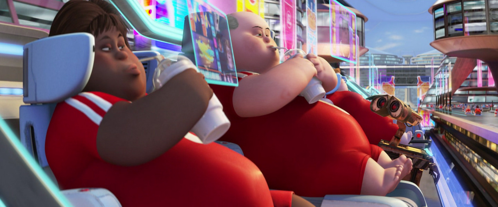

StatementAs we continue to adapt and evolve as a species, primitive qualities and advanced technology enhance our being and have taken us to Maximum Health. A new set of benchmarks, measurement systems, and devices place a higher standard on and a more holistic approach to health. The thriving community of Maximum Health has achieved an unprecedented state of vitality through embracing this homogenization.
BackgroundOur ability to access food is easier than ever before and our need to exercise seemed obsolete. Everything we needed was within our reach. To achieve this took thousands of years and out of context each individual advancement seemed to be a major improvement to our quality of life. However, when mixed with the human psyche we experienced an inverse effect and were inturn being terminated by diseases like stroke, diabetes, and heart disease.
Alternate ViewsDisney Pixar provided an interesting perspective on what the future of health could look like in their motion picture Wall-E. Having exhausted earth's resources, humans resort to living on a spaceship. Aboard, they hover around in chairs and consume their meals through a straw out of a cup reminiscent of a 7-Eleven's Big Gulp. Lack of exercise over hundreds of years has cause severe bone degradation to the point they can no longer walk.
Primitive Needs Our species has been around for about 200,000 years and still require the same basic needs. Certain things have changed over time but our bodies have remained relatively similar.
Advanced TechnologyThe current state of technology is like nothing ever experienced before and it can be utilized to our benefit instead of detriment.
Units of MeasurementOur ability to access food is easier than ever before and our need to exercise seems obsolete. Everything we need is within our reach. To achieve this took thousands of years and out of context each individual advancement seemed to be a major improvement to our quality of life. However, they have not been utilized properly and are killing us through diseases like stroke, diabetes, and heart disease.
Devices for MeasurementOur ability to access food is easier than ever before and our need to exercise seems obsolete. Everything we need is within our reach. To achieve this took thousands of years and out of context each individual advancement seemed to be a major improvement to our quality of life. However, they have not been utilized properly and are killing us through diseases like stroke, diabetes, and heart disease.
Performance TargetsOur ability to access food is easier than ever before and our need to exercise seems obsolete. Everything we need is within our reach. To achieve this took thousands of years and out of context each individual advancement seemed to be a major improvement to our quality of life. However, they have not been utilized properly and are killing us through diseases like stroke, diabetes, and heart disease.